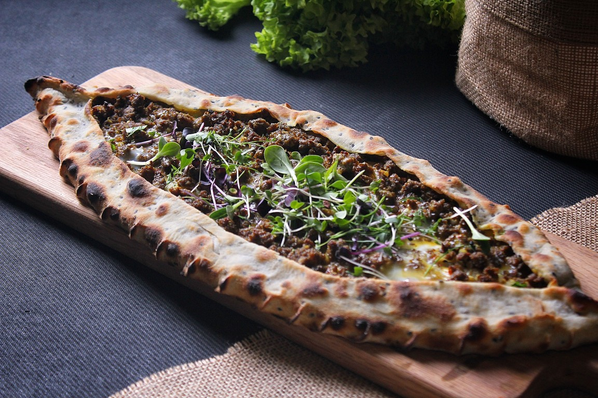

Pridite in doživite pristne turške okuse, pripravljene s toplino in tradicijo. Vsaka jed pripoveduje zgodbo o bogati kulturi, dišečih začimbah in gostoljubju, ki povezuje ljudi za isto mizo.
O restavraciji
Izpostavljene jedi
Jagnji Kebap
Jed 1 - Kebap Sočni koščki jagnjetine, pečeni na žaru in obogateni z dišečimi turškimi začimbami. Postreženi so s svežo zelenjavo, solato in nežno omako, ki dopolni njihov bogat okus.
kiymalı pide - Pita z mesom

Jed 2 - kiymalı pide - Pita z mesom Tradicionalna turška pita iz tankega, hrustljavo zapečenega testa, obložena z začinjenim mletim mesom, paradižnikom, papriko in čebulo. Jed je okusna, aromatična in odlična za ljubitelje pristnih turških okusov.
Baklava
Jed 2 - Baklava Priljubljena turška sladica iz tankih plasti hrustljavega testa, polnjenih s pistacijami in prelitih s sladkim sirupom. Njena kombinacija hrustljave teksture, oreščkov in nežne sladkobe ustvari popoln zaključek obroka.Rezervirajte mizo.